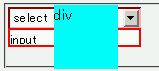
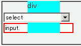

2003-09-03修正。補足を修正。
select要素ではz-indexやborderなど、ほかのフォームコントロール要素で使用可能なプロパティの一部が無視される。
<div style="position:relative;"> <form style="position:relative; z-index:1;"> <div> <select style="border:2px solid red; width:10em;"> <option>select</option> </select> </div> <div> <input style="border:2px solid red; width:10em;"> </div> </form> <div style="position:absolute; z-index:2; left:3em; top:0; width:4em; height:4em; background:aqua;">div</div> </div>
borderプロパティとz-indexプロパティに対する挙動の違いを、select要素とinput要素とで比べています。背景が空色のdiv要素はform要素とその子孫要素であるフォームコントロールを覆うように表示されるはずです。
N7.02での表示（標準モード）
WinIE6.0での表示（標準モード）
以下に挙げるプロパティなどがこのバグに該当します。
select要素のリストボックスはWindowsのコントロールを表示しているようです。このため、z-indexプロパティをサポートしていないのはWinIEの仕様です。
WinIE5.5、WinIE6.0標準モード、WinIE6.0互換モードでこの現象の発生を確認しました。